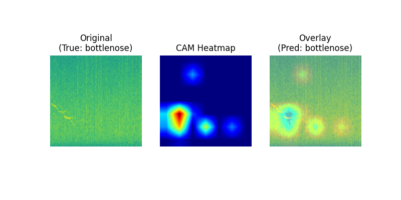
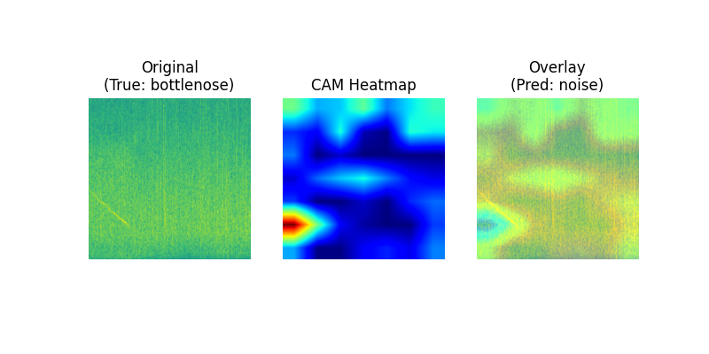
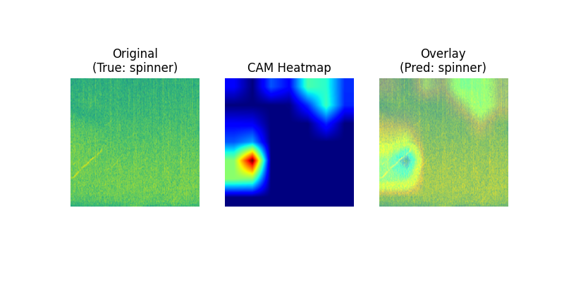
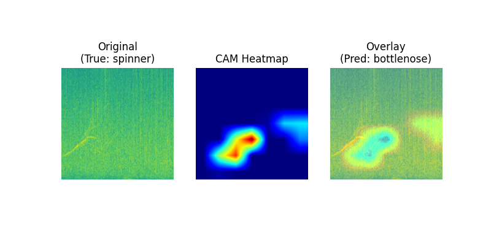

Odontocete Whistle Analysis
This project, with the Hubbs SeaWorld Research Institute, is focused on understanding acoustic features that differentiate odontocetes, with the aim of quantifying differences between species and understanding changes in vocalizations over time.
Dataset
DCLDE 2015 Odontocete Dataset
I extracted approximately 1000 whistles from each of the bottlenose, spinner, and noise classes in RavenPro. Only 50 whistle examples were available for Chance (the common dolphin), obtained from a recovery pool at HSWRI (image below). Only singular whistles (without overlap with other individuals) were extracted and the whistle was extracted with minimal space on either side of the start and end of the whistle.

Approach
I tested various padding techniques to standardize data:
- Black Padding: Padding the spectrogram with black pixels to account for whistles with shorter duration. Maximum spectrogram size was determined by the longest whistle in the dataset (approximately 3 - 4 seconds in length.)
- Noise Padding: Padding of the spectrogram with noise taken from the same day as the day the recording of the whistle was taken.
- No Padding: Duration in the spectrogram was not standardized. Each whistle filled the entire spectrogram, and all spectrograms were the same image size.
I then trained a ResNet50 classisifer (pretrained on ImageNet) on these four classes, and used tSNE, UMAP, and dashboards to visualize and analyze embeddings. I also used Class Activation Mapping for ML interpretability; CAM helps us understand what areas of an image are weighted highly during classification. This is especially interesting when looking at trends for images that were correctly classified and images that were not - for example, if a bottlenose whistle is misclassified as a spinner, what parts of the whistle were highly weighted by the model to lead to the classification decision?
This is ongoing work: Currently working with biologists at HSWRI to analyze results shown below.
Results
| Experiment | Precision | Recall |
|---|---|---|
| Black Padding | 0.7515602163219861 | 0.75 |
| Noise Padding | 0.8234279440150393 | 0.8159509202453987 |
| No Padding | 0.9023576730039795 | 0.9027355623100304 |
Embedding Visualizations
Class Activation Mapping



